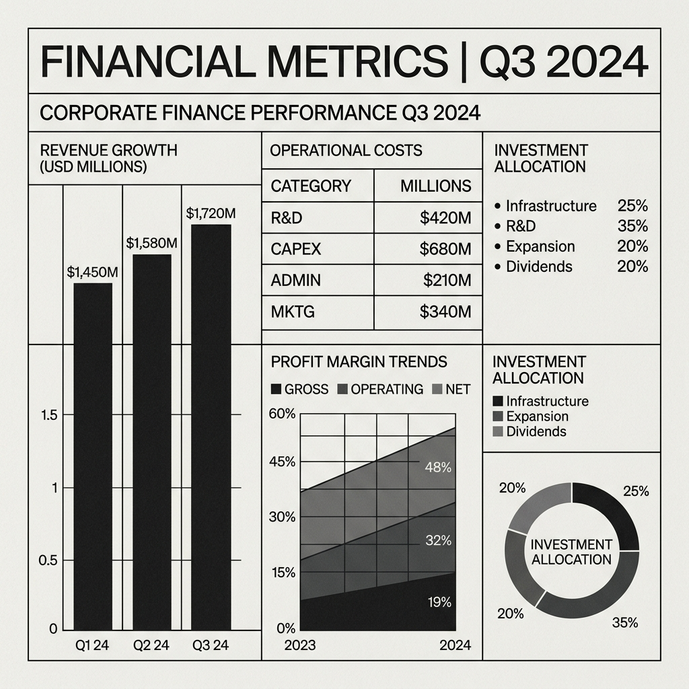

E-ticaret markanız için organik videoların şansına güvenmeyi bırakın. Ürününüzü en doğru kitleye ulaştıracak yayıncıları verilerle analiz ediyor, bütçenizi optimize ediyor ve tüm süreci finansal bir raporla önünüze koyuyoruz.

Şekil 1.2: Klasik Pazarlama Kanallarındaki Yatırım/Geri Dönüşüm Bütünlüğü SapmasıOrganik Reels, Shorts ve TikTok videoları sadece sosyal medya algoritmalarının sunduğu mevcut kısıtlı havuzunuzda döner. Markanızı ölçeklendirmek ve yeni kitlelere açılmak için organik erişimin şans faktörüne bel bağlayamazsınız.
Satıcının kendi kanalında kendi ürününü övmesi basit bir reklamdır ve tüketicide direnç yaratır. Marka mesajının, kitlesiyle güçlü ve organik bağ kurmuş doğru yayıncı tarafından aktarılması ise gerçek ve güçlü bir Sosyal Kanıttır.
Ticaret ve finans şansa bırakılmayacak kadar ciddidir. Çoğu ajans size sadece 'görüntülenme sayıları' vaat ederken, biz sisteme girilen bütçenin karşılığını tıklamalar, etkileşim kalitesi ve doğrudan finansal çıktılarla ölçüyoruz.
Ürününüzün hedef kitlesiyle, potansiyel yayıncı takipçilerinin demografik verilerini (yaş, cinsiyet, coğrafi dağılım ve etkileşim kalitesi) derinlemesine tarıyoruz. Şansa dayalı eşleştirmeleri değil, matematiksel doğruluğu temel alıyoruz.
Yayıncılar ile olan tüm bütçe pazarlıklarını, sözleşme süreçlerini ve kreatif kurguların operasyonel takibini ajansımızın kurumsal gücüyle yönetiyoruz. Markanızı gereksiz maliyetlerden koruyor, operasyonel yükü sıfıra indiriyoruz.
Kampanya sonunda kaç milyon kişinin 'gördüğünü' değil; doğrudan kaç kişinin tıkladığını, sepete ekleme oranlarını ve net reklam harcaması getirisini (ROAS) raporluyoruz. Her kuruşun nereye ulaştığını finansal tablolarla gösteriyoruz.
Formu doldurduktan sonra, analistlerimiz mevcut reklam hesaplarınızı ve ürün yapınızı inceleyerek 48 saat içinde size özel bir **Bütçe Dağılım Raporu** hazırlayacaktır.